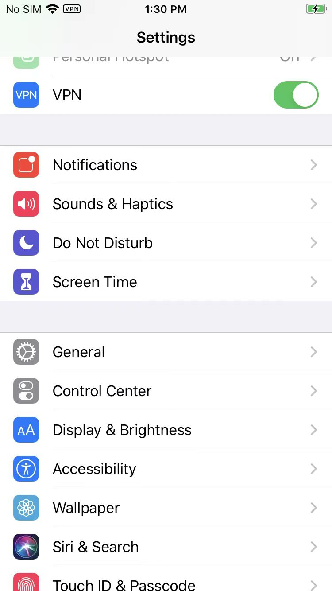
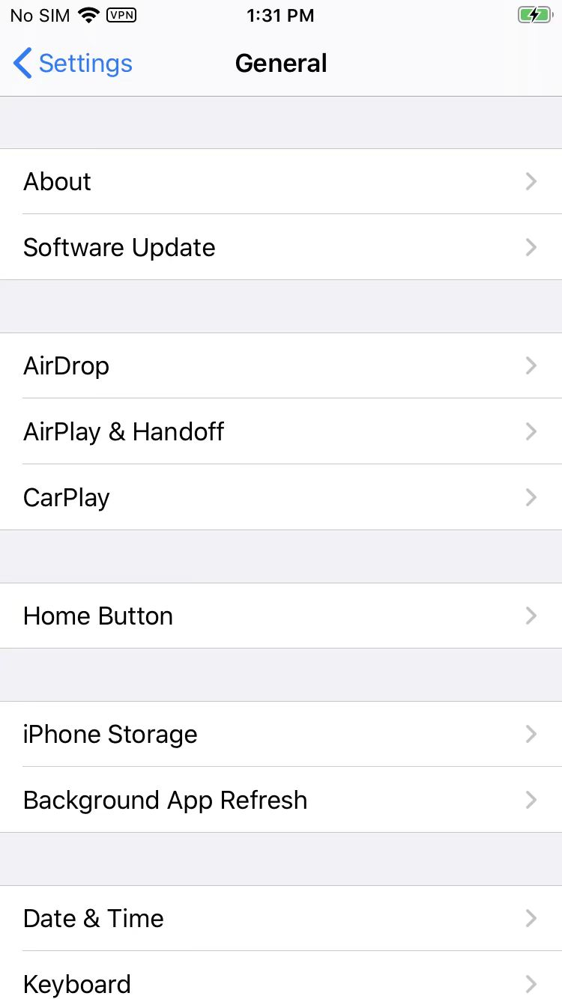
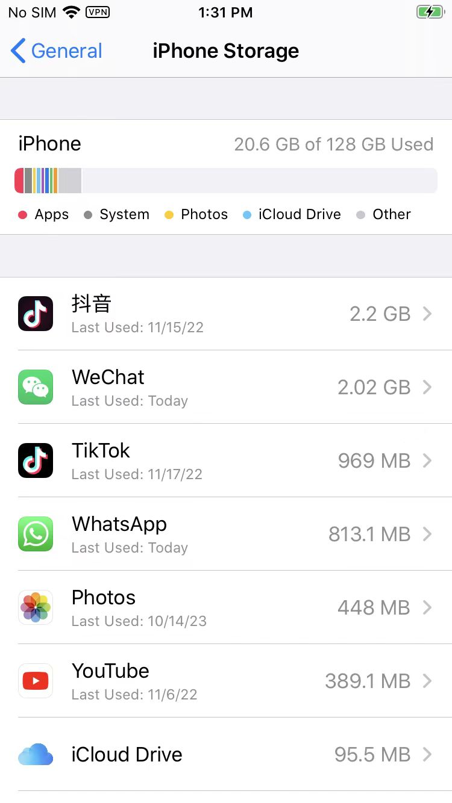
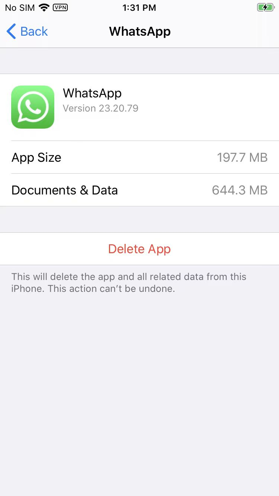
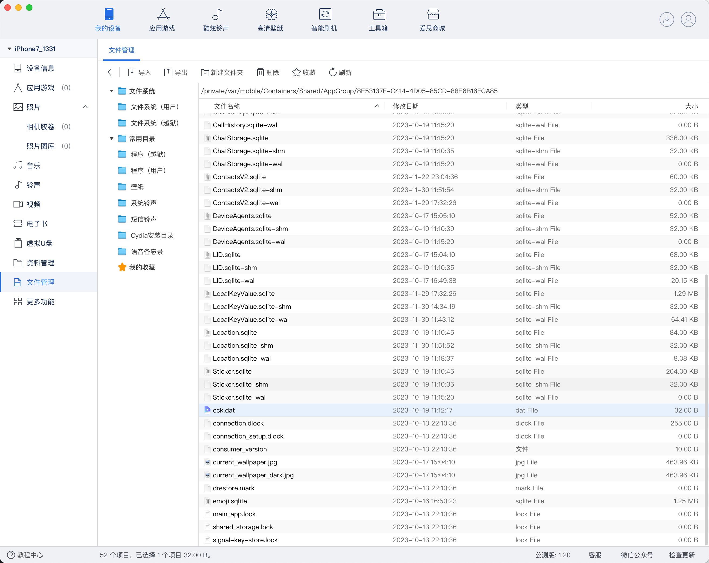
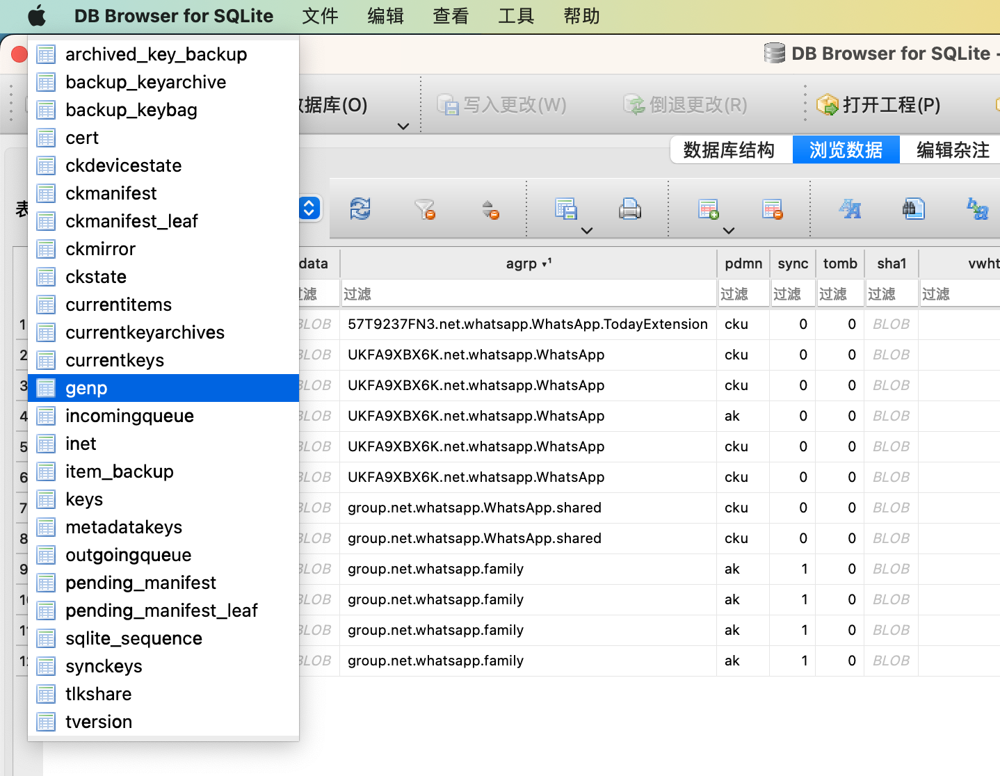

app卸载后仍残留数据
- 卸载APP的心得：
- app完全卸载后仍有可能有app相关的数据
- 除了标准的卸载APP加上数据，额外还有可能有APP相关的数据存在
- 比如APP group 是同一个公司旗下的多个APP共享的数据
- 除了标准的卸载APP加上数据，额外还有可能有APP相关的数据存在
- app完全卸载后仍有可能有app相关的数据
背景
iOS逆向调试期间，尝试模拟app首次初始化过程
而去卸载掉app，且用的是：
删除app，且同时删除数据
具体操作路径是：
- Settings->General->iPhone Storage->点击对应app->该app详情页：app版本号和数据大小->Delete App




如此，可以彻底删除app，包括app和数据
注：
对比，相比之下，从桌面上，长按app去删除：
-》
记得是，好像是：只能删除app本身，无法删除Data数据的
但是后来的经验是：
其实，即使从iPhone Storage中，彻底删除app和data数据后，其实也还是有可能，存在app相关数据的
至少可能有2方面的数据：
- AppGroup数据
- 同一家公司（该app的开发者或所属公司）其下的，多个app，所共享的数据（目录）
- Keychain数据库中的数据
举例
具体举例说明：
AppGroup数据
WhatsApp的话，独立于app本身，有个：AppGroup目录：
- WhatsApp的
AppGroup目录/private/var/mobile/Containers/Shared/AppGroup/8E53137F-C414-4D05-85CD-88E6B16FCA85/
其下就有很多子目录和文件：
➜ ~ ssh root@192.168.2.6
iPhone7-1331:~ root# uname -a
Darwin iPhone7-1331 19.3.0 Darwin Kernel Version 19.3.0: Thu Jan 9 21:10:55 PST 2020; root:xnu-6153.82.3~1/RELEASE_ARM64_T8010 iPhone9,1 arm64 D10AP Darwin
iPhone7-1331:~ root# ls -lh /private/var/mobile/Containers/Shared/AppGroup/8E53137F-C414-4D05-85CD-88E6B16FCA85/
total 6.8M
drwxr-xr-x 2 mobile mobile 64 Oct 17 14:04 AppState/
-rw-r--r-- 1 mobile mobile 76K Oct 17 08:57 AvatarSearchTags.sqlite
-rw-r--r-- 1 mobile mobile 336K Oct 19 16:33 Axolotl.sqlite
-rw-r--r-- 1 mobile mobile 32K Nov 23 14:01 Axolotl.sqlite-shm
-rw-r--r-- 1 mobile mobile 0 Nov 23 10:17 Axolotl.sqlite-wal
-rw-r--r-- 1 mobile mobile 36K Oct 19 10:10 BackedUpKeyValue.sqlite
-rw-r--r-- 1 mobile mobile 32K Oct 19 10:10 BackedUpKeyValue.sqlite-shm
-rw-r--r-- 1 mobile mobile 0 Oct 19 10:15 BackedUpKeyValue.sqlite-wal
drwxr-xr-x 5 mobile mobile 160 Nov 22 22:04 Biz/
-rw-r--r-- 1 mobile mobile 88K Oct 19 10:05 CallHistory.sqlite
-rw-r--r-- 1 mobile mobile 32K Oct 19 10:10 CallHistory.sqlite-shm
-rw-r--r-- 1 mobile mobile 0 Oct 19 10:15 CallHistory.sqlite-wal
-rw-r--r-- 1 mobile mobile 336K Oct 19 10:15 ChatStorage.sqlite
-rw-r--r-- 1 mobile mobile 32K Oct 19 10:10 ChatStorage.sqlite-shm
-rw-r--r-- 1 mobile mobile 0 Oct 19 10:15 ChatStorage.sqlite-wal
-rw-r--r-- 1 mobile mobile 60K Nov 22 22:04 ContactsV2.sqlite
-rw-r--r-- 1 mobile mobile 32K Nov 23 14:01 ContactsV2.sqlite-shm
-rw-r--r-- 1 mobile mobile 0 Nov 23 10:17 ContactsV2.sqlite-wal
-rw-r--r-- 1 mobile mobile 52K Oct 17 14:05 DeviceAgents.sqlite
-rw-r--r-- 1 mobile mobile 32K Oct 19 10:10 DeviceAgents.sqlite-shm
-rw-r--r-- 1 mobile mobile 0 Oct 19 10:15 DeviceAgents.sqlite-wal
drwxr-xr-x 3 mobile mobile 96 Oct 13 21:10 FieldStats2/
-rw-r--r-- 1 mobile mobile 68K Oct 17 14:04 LID.sqlite
-rw-r--r-- 1 mobile mobile 32K Oct 19 10:10 LID.sqlite-shm
-rw-r--r-- 1 mobile mobile 21K Oct 17 15:49 LID.sqlite-wal
drwxr-xr-x 4 mobile mobile 128 Oct 13 21:10 Library/
-rw-r--r-- 1 mobile mobile 1.3M Nov 23 10:17 LocalKeyValue.sqlite
-rw-r--r-- 1 mobile mobile 32K Nov 23 14:01 LocalKeyValue.sqlite-shm
-rw-r--r-- 1 mobile mobile 25K Nov 23 14:01 LocalKeyValue.sqlite-wal
-rw-r--r-- 1 mobile mobile 84K Oct 19 10:10 Location.sqlite
-rw-r--r-- 1 mobile mobile 32K Nov 23 14:01 Location.sqlite-shm
-rw-r--r-- 1 mobile mobile 8.1K Oct 19 10:18 Location.sqlite-wal
drwxr-xr-x 4 mobile mobile 128 Oct 19 10:06 Logs/
drwxr-xr-x 3 mobile mobile 96 Oct 16 15:50 Media/
drwxr-xr-x 3 mobile mobile 96 Oct 17 14:05 Message/
-rw-r--r-- 1 mobile mobile 204K Oct 19 10:10 Sticker.sqlite
-rw-r--r-- 1 mobile mobile 32K Oct 19 10:10 Sticker.sqlite-shm
-rw-r--r-- 1 mobile mobile 0 Oct 19 10:15 Sticker.sqlite-wal
-rw-r--r-- 1 mobile mobile 32 Oct 19 10:12 cck.dat
-rw-rw-rw- 1 mobile mobile 255 Oct 13 21:10 connection.dlock
-rw-r--r-- 1 mobile mobile 0 Oct 13 21:10 connection_setup.dlock
-rw-r--r-- 1 mobile mobile 10 Oct 13 21:10 consumer_version
-rw-r--r-- 1 mobile mobile 464K Oct 17 14:04 current_wallpaper.jpg
-rw-r--r-- 1 mobile mobile 464K Oct 17 14:04 current_wallpaper_dark.jpg
-rw-r--r-- 1 mobile mobile 0 Oct 13 21:10 drestore.mark
-rw-r--r-- 1 mobile mobile 1.3M Oct 16 15:50 emoji.sqlite
drwxr-xr-x 3 mobile mobile 96 Oct 19 10:12 fts/
-rw-r--r-- 1 mobile mobile 0 Oct 13 21:10 main_app.lock
-rw-r--r-- 1 mobile mobile 0 Oct 13 21:10 shared_storage.lock
-rw-r--r-- 1 mobile mobile 0 Oct 13 21:10 signal-key-store.lock
drwxr-xr-x 3 mobile mobile 96 Oct 17 15:49 stickers/
爱思助手查看的效果：


包括很多相关数据：
比如之前调试涉及到的：
注册相关参数authKey的最终来源：
/private/var/mobile/Containers/Shared/AppGroup/8E53137F-C414-4D05-85CD-88E6B16FCA85/cck.dat
iPhone7-1331:~ root# ls -lh /private/var/mobile/Containers/Shared/AppGroup/8E53137F-C414-4D05-85CD-88E6B16FCA85/cck.dat
-rw-r--r-- 1 mobile mobile 32 Oct 19 10:12 /private/var/mobile/Containers/Shared/AppGroup/8E53137F-C414-4D05-85CD-88E6B16FCA85/cck.dat
详见：
- 【记录】iOS逆向WhatsApp：AppGroup中log日志内容
- 【记录】iOS逆向WhatsApp：导出并研究Shared/AppGroup目录中的内容
- 【未解决】iOS逆向WhatsApp：-[WAStaticPrivateKeyStore privateKey]
Keychain数据库中的数据
之前找WhatsApp中gena==kSecAttrGeneric的值0x45534916的来源是找到最终是：
Keychain数据库中，有保存了：
WhatsApp的最初写入Keychain数据库中数据：


其中此处genp中就有WhatsApp相关的12条数据记录
其中的
group.net.whatsapp.WhatsApp.shared中的gena的值，就是：0x45534916通过SHA1加密后的数值
总之，是保存有WhatsApp相关数据的。
详见：
- 【未解决】iOS逆向WhatsApp：Keychain中genp中WhatsApp数据何时和如何被写入的
- 【未解决】iOS中的keychain保存位置路径
- 【记录】Mac中用DB Browser for SQLite查看keychain数据库文件：/var/Keychains/keychain-2.db
- 【已解决】Mac中如何打开iOS中的SQLite3格式的数据库.db文件
- 【记录】iOS逆向WhatsApp：查找keychain的数据库/var/Keychains/keychain-2.db中WhatsApp相关数据
- 【整理】iOS逆向：Keychain数据库字段含义